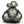
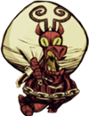
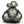

1%
| Krampus | |
|  |
|
| Health | 200 |
| Damage | 50 |
| Attack Period | 1.2 |
| Attack Range | 3 |
| Running Speed | 7 |
| Special Ability | Steals items |
| Loot | 1% |
| DebugSpawn | "krampus" |
| “ | Hello, foul creature of the underworld. | ” |
| –Wendy | ||
Krampus is a neutral mob that will spawn if the player kills too many "innocent" (non-aggressive) Animals, exceeding a certain naughtiness rating. As the player is getting close to Krampus spawning, there will be a hissing noise warning the player each time more innocent creatures are killed. The player will hear a unique piercing noise upon Krampus' spawn. Not acting "naughty" for a while gradually decreases the naughtiness rating by one per minute.
Krampus takes 3 blasts from the Ice Staff to be frozen and 1 shot from a Sleep Dart to be put to sleep.Krampus will break Chests, then proceed to steal everything before retreating. Krampus will also pick up items lying on the ground prior to destroying chests. In order to get their items back, players must kill it and pick up the items. Krampus will not steal the Eye Bone, Lucy the Axe, Willow's Lighter, Abigail's Flower, Pile o' Balloons, Codex Umbra, Wooden Thing components (Ring Thing, Crank Thing, Box Thing, and Metal Potato Thing), and Divining Rod.
Krampus moves fairly fast, dealing 50 points of damage per hit to unarmored targets, which can kill most characters in three hits. Krampus has a 1% chance of dropping its item sack upon death, which can be equipped like a Backpack. It yields 14 inventory slots rather than the Backpack's 8, and it doesn't slow the character like the Piggyback.
When killed, Krampus will drop all the goods he stole, along with one Monster Meat and two pieces of Charcoal. Krampus also behaves similarly to a Gobbler when being pursued. He will disappear into his sack if the player doesn't kill him fast enough.
Krampus will keep running around the player until no more items exist on-screen.
Two Kramps spawned at once. One is stealing an item with his sack.
Krampus will come and steal a very naughty player's items. It can break containers and steal entire stacks of items, then escape by paradoxically jumping into his own bag. One or two Kramps can spawn at the same time after day 50, and two or three after day 100.
Each minute of restraint reduces naughtiness by 1. Once the player reaches a threshold of naughtiness, a random number between 31 and 50, Krampus will come and steal your items. After Krampus appears, the naughtiness level is reset to 0.
It is worth noting that setting creatures ablaze will not award the player with naughtiness points. This is because the fire is considered to be the killing factor. The same goes for Tooth Traps, Bee Mines, Gunpowder, and Slurtle Slime as they are considered to be environmental damage.
Another thing worth noting is that fishing for Fish does not count as a naughty act. This means that players who fear Krampus may just feed on fish and vegetables.
|
Creature | Naughtiness |
|---|---|
| 50 | |
| 6 | |
| 5 | |
| 4 | |
| 3 | |
| 2 |
| 1 |
Below is the number of hits it takes with each weapon to kill Krampus when playing with characters with a default damage modifier.
| Weapon |
|
|
|
|
|
| |||||
|---|---|---|---|---|---|---|---|---|---|---|---|
| No. of hits for | 48 | 15 | 12 | 8 | 7 | 6 | 5 | 4 | 3 | 2 | 1 |
")
| Mobs | |
| Hostile Monsters | Batilisk • Cave Spider • Clockwork Bishop • Clockwork Rook • Clockwork Knight • Dangling Depth Dweller • Depths Worm • Frog • Guardian Pig • Ghost • Shadow Creature • Hound (Red Hound • Blue Hound) • Killer Bee • Lureplant • MacTusk • Merm • Mosquito • Spider • Spider Warrior • Spitter • Tallbird • Tentacle (Big Tentacle • Baby Tentacle) • Wee MacTusk • (Birchnut Treeguard • Varg |
| Boss Monsters | Ancient Guardian • Deerclops • Spider Queen • Treeguard • (Bearger • Dragonfly • Goose |
| Neutral Animals | Bee • Beefalo • Bunnyman (Beardlord) • Koalefant • Krampus • Pengull • Pig (Werepig) • Rock Lobster • Snurtle • Slurtle • Smallish Tallbird • Splumonkey • (Buzzard • Catcoon • Volt Goat |
| Passive Animals | Baby Beefalo • Butterfly • Chester • Crow • Gobbler • Mandrake • Rabbit (Beardling) • Redbird • Smallbird • Snowbird • (Glommer • Moleworm |
| Other | Abigail • Charlie • Maxwell • Pig King |

{kind=link}
{kind=link}
{kind=link}
{kind=link}
{kind=link}
{kind=link}
{kind=link}